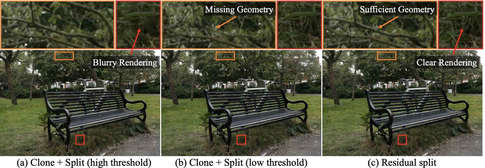

|
|
Choreographing a World of Dynamic Objects
Yanzhe Lyu*,
Chen Geng*,
Karthik Dharmarajan,
Yunzhi Zhang,
Hadi Alzayer,
Shangzhe Wu,
Jiajun Wu
preprint 2026
[Arxiv]
[Website]
tl;dr: We propose a framework that generates motion for multi-object scenes conditioned on a text prompt, modeling both object deformation and inter-object interactions.
|
|

|
ResGS: Residual Densification of 3D Gaussian for Efficient Detail Recovery
Yanzhe Lyu,
Kai Cheng,
Xin Kang,
Xuejin Chen
ICCV 2025
[Arxiv]
[Website]
[Code]
tl;dr: We identify a key limitation in 3D-GS densification and introduce a new densification strategy together with a coarse-to-fine training pipeline.
|
Selected Awards
[2021] National Olympiad in Informatics (NOI), Silver medal
|
|